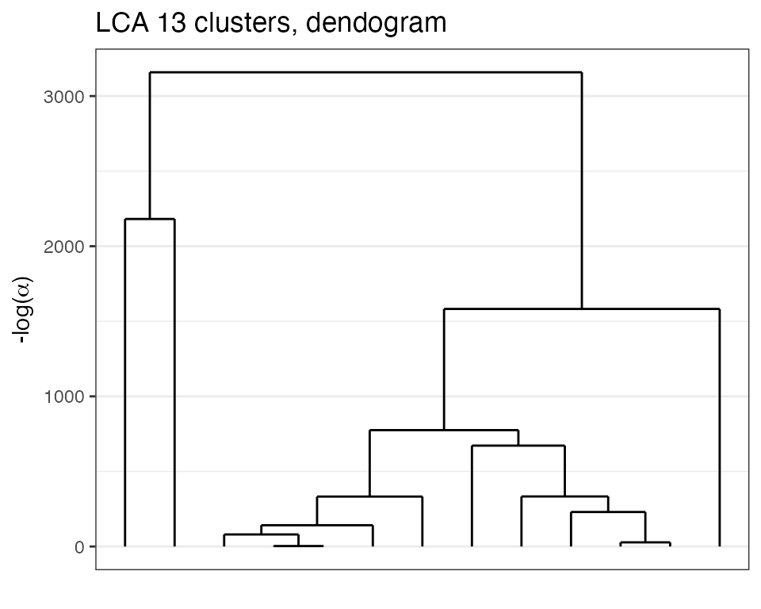

Loads the necessary packages for the vignettes.
library(future) # allows parralel processing in greed()
plan(multisession)
library(greed)
library(dplyr)
library(tidyr)
library(purrr)
library(ggpubr)
library(ggplot2)
library(aricode)
library(careless) # string processing
library(ggwordcloud)
set.seed(1234)The greed package and DLVM framework allows the clustering of categorical data. This vignette describes typical use cases of the greed() function in this context, and illustrates its use on real datasets.
Categorical data clustering with the Latent Class Analysis
We are interested in the clustering of categorical datasets, which are typically found in survey data or item response theory (ITR). In this context, we observe \(n\) individuals described by \(p\) variables, taking one among \(d_j\) modalities for each variable \(j\). Such datasets are typically represented using a one-hot-encoding of each factor in a design matrix \(\mathbf{X} \in \{0,1\}^{n \times d}\) where \(d = \sum_{j=1}^p d_j\). Latent class analysis (LCA) is a generative model for categorical data clustering which posits conditional independance of the factor variables conditionally on the (unknown) partition. Below is a description of its Bayesian formulation with the use of proper conjugate priors \[ \begin{equation} \begin{aligned} \pi&\sim \textrm{Dirichlet}(\alpha),\\ \forall k, \forall j, \quad \theta_{kj} &\sim \textrm{Dirichlet}_{d_j}(\beta), \\ Z_i&\sim \mathcal{M}_K(1,\pi),\\ \forall j=1, \ldots, p, \quad X_{ij}|Z_{ik}=1 &\sim \mathcal{M}_{d_j}(1, \theta_{kj}),\\ \end{aligned} \end{equation} \] For each cluster \(k\) and variable \(j\), the vector \(\theta_{kj}\) represents the probability of each of the \(d_j\) modalities. With the choice of priors above, the LCA model admits an exact ICL expression similar to the mixture of multinomials derived here (Section 3) .
Analysis of two real datasets
We now illustrate the use of the greed package on two real datasets:
- Mushroom data from UCI Machine Learning Repository describing 8124 mushrooms with 22 phenotype variables. Each mushroom is classified as “edible” or “poisonous” and the goal is to recover the mushroom class from its phenotype.
- Young people survey data from Miroslav Sabo and avalaible on the Kaggle platform. This is an authentic example of questionnaire data where Slovakian young people (15-30 years old) were asked musical preferences according to different genres (rock, hip-hop, classical, etc.).
The data are imported by the greed package.
data("mushroom")Mushroom data
We begin by forming the necessary vectors for analysis. The data has \(n=8124\) rows and \(p=23\) columns. The first column contains the poisonous status of each mushroom with two possible values, “p” for “poisonous” and “e” for edible, it will serve as the clustering we seek to recover. The remaining variables are used for clustering. Note that we only use a subset of the data for illustration purpose here.
X = mushroom[,-1]
subset =sample(1:nrow(X), size = 1000)
label = mushroom$edibility[subset]
head(X[subset,1:10])
#> V2 V3 V4 V5 V6 V7 V8 V9 V10 V11
#> 7452 k s n f f f c n b t
#> 8016 k f w f n f w b p e
#> 7162 k s n f s f c n b t
#> 8086 k f w f n f w b g e
#> 7269 x y e f s f c n b t
#> 1004 x s w t p f c n w eClustering
The clustering is again done via the main function greed() with argument model set to LCA and the genetic hybrid algorithm for ICLex maximization. The value of the \(\beta\) hyperparameter for the Dirichlet prior on \(\theta_{kj}\) can be specified by the user, it defaults to 1. The Lca model may only be used with datasets stored in a data.frame object with only factors, when such data are provided to the greed function the Lca model is picked by default. To perform the clustering it therefore sufficient to call greed with the prepared data.frame.
sol_greed<-greed(X[subset,])
#> ------- LCA model fitting ------
#> ################# Generation 1: best solution with an ICL of -12902 and 14 clusters #################
#> ################# Generation 2: best solution with an ICL of -12836 and 16 clusters #################
#> ################# Generation 3: best solution with an ICL of -12822 and 16 clusters #################
#> ################# Generation 4: best solution with an ICL of -12822 and 16 clusters #################
#> ------- Final clustering -------
#> ICL clustering with a LCA model, 14 clusters and an icl of -12775.
table(Edibility=label, Cluster=clustering(sol_greed))
#> Cluster
#> Edibility 1 2 3 4 5 6 7 8 9 10 11 12 13 14
#> e 0 0 0 14 26 43 24 72 0 15 11 71 31 218
#> p 201 162 5 7 7 0 0 0 35 24 34 0 0 0The hybrid genetic algorithm found a solution with \(K=14\) clusters which is quite over-segmented while displaying a good separation among edible and poisonous mushrooms. The ARI of the partition is 0.26 which is explained by the over-segmentation of the solution compared to the \(2\)-class problem.
Hierarchy
Exploring the dendrogram provided by the hierarchical algorithm is quite useful in this case. We clearly see a hierarchical structure appearing with \(K=2\) main clusters. Thus, we can cut the tree at this height and look at the solution.
plot(sol_greed, type='tree')
sol2 = cut(sol_greed, 2)
table(Edibility=label, Cluster=clustering(sol2))
#> Cluster
#> Edibility 1 2
#> e 0 525
#> p 363 112Here, we clearly see that the order of merges is consistent with the labels, and the final ARI is 0.6. While, some poisonous mushrooms have been categorized as edible, this is the consequence of the way the labels have been set, since mushrooms for which the edibility status was unknown were classified as poisonous by default. While this choice is reasonable from a strict health perspective. Furthermore, as the data documentation specifies, ’‘’’. Thus, the unsupervised problem is hard and the obtained clustering is satisfying on this unsupervised problem. Moreover, this illustrates the interest of having the hierarchical algorithm in order to access coarser partitions.
Young people survey data
data("Youngpeoplesurvey")We begin by preprocessing the data, only keeping the categorical variable. The original dataset has \(n=1010\) respondents for \(p=150\). We keep only the feature related to the musical taste of the respondent and remove potential strike of identical responses. Eventually, the data are cast to factors with an explicit levels for the missing responses.
Data preparation
nc = 19
selected = Youngpeoplesurvey %>%
select(all_of(1:nc)) %>%
mutate(string = longstring(.)) %>%
mutate(sel = if_else(string <= 10,TRUE,FALSE) ) %>% pull(sel)
Xnum = Youngpeoplesurvey %>%
select(all_of(1:nc)) %>%
filter(all_of(selected) )
X = Xnum %>%
mutate_all(function(x){
x[is.na(x)]="NA"
factor(x,levels=c(1:5,"NA"))
}) %>%
droplevels()Hierarchy
As previouslythe clustering is obtained with a call to greed and the Lca generative model will be taken by default since the dataset is a data.frame with factors only.
sol=greed(X)
#> ------- LCA model fitting ------
#> ################# Generation 1: best solution with an ICL of -27481 and 9 clusters #################
#> ################# Generation 2: best solution with an ICL of -27478 and 10 clusters #################
#> ################# Generation 3: best solution with an ICL of -27445 and 7 clusters #################
#> ################# Generation 4: best solution with an ICL of -27425 and 7 clusters #################
#> ################# Generation 5: best solution with an ICL of -27425 and 7 clusters #################
#> ------- Final clustering -------
#> ICL clustering with a LCA model, 6 clusters and an icl of -27416.The algorithm found \(K=6\) clusters which are quite balanced. To explore the results, we plot the dendogram found.
plot(sol,type='tree')
Clustering analysis
We may also used the marginals plot to depict the conditional probabilities of the different responses knowing the clusters assignment.
plot(sol,type='marginals')
The cluster appears to be quite different and coherent. If needed, we may get the estimated conditional probabilities with the help of the generic function coef().
params = coef(sol)
params$Thetak[c("Country","Latino")]
#> $Country
#> 1 2 3 4 5 NA
#> cluster1 0.5809524 0.2809524 0.1142857 0.01904762 0.000000000 0.004761905
#> cluster2 0.2166667 0.3666667 0.1666667 0.18333333 0.066666667 0.000000000
#> cluster3 0.5582822 0.2453988 0.1165644 0.03067485 0.042944785 0.006134969
#> cluster4 0.1931818 0.3352273 0.3068182 0.11931818 0.028409091 0.017045455
#> cluster5 0.1509434 0.1509434 0.1320755 0.28301887 0.283018868 0.000000000
#> cluster6 0.2117647 0.4617647 0.2382353 0.08529412 0.002941176 0.000000000
#>
#> $Latino
#> 1 2 3 4 5 NA
#> cluster1 0.31904762 0.25238095 0.1904762 0.10476190 0.11904762 0.014285714
#> cluster2 0.25000000 0.15000000 0.3333333 0.15000000 0.11666667 0.000000000
#> cluster3 0.50306748 0.31901840 0.1226994 0.01226994 0.04294479 0.000000000
#> cluster4 0.06818182 0.30113636 0.3011364 0.24431818 0.07954545 0.005681818
#> cluster5 0.01886792 0.01886792 0.1132075 0.11320755 0.71698113 0.018867925
#> cluster6 0.02647059 0.24117647 0.2852941 0.26470588 0.17352941 0.008823529To show in another way the clusters structure we will use word clouds of feature names with a color encoding that depict if the feature has an average score greater than the average score of the whole population. With this representation big blue feature correspond to music type that score higher than the mean in this cluster and big red feature to music type that have a smaller score than the mean in the corresponding group.
params = coef(sol)
means_scores = lapply(params$Thetak,function(x){
apply(x[,1:5],1,function(r){
sum(r*1:5)
})
})
means_scores_long = do.call(rbind,
map2(means_scores, names(means_scores),function(x,y){
tibble(cluster=1:K(sol),mean=x,var=y)
})) %>%
mutate(var = gsub("\\."," ",var))
means_scores_glob = Xnum %>%
summarise_all(function(x){mean(x,na.rm=TRUE)}) %>%
tidyr::pivot_longer(all_of(1:nc),names_to = "var",) %>%
mutate(var = gsub("[,-/]"," ",var))
gg = means_scores_long %>%
left_join(means_scores_glob) %>%
mutate(dm=mean-value)
#> Joining, by = "var"
ggplot(gg %>% filter(abs(dm)>0.1), aes(label = var, size = abs(dm),color=dm)) +
geom_text_wordcloud() +
scale_size_area(max_size = 7) +
theme_minimal() +
scale_color_gradient2(guide="none")+
facet_wrap(~cluster)
Using such a visualization allow to easily describe the different groups. The first cluster is close to the global mean, the second corresponds to Classical music and Opera lovers, the third to peoples that like almost all the musical genres, the forth to Rockers, the Fifth to Hard Rockers and the sixth to Rap lovers.